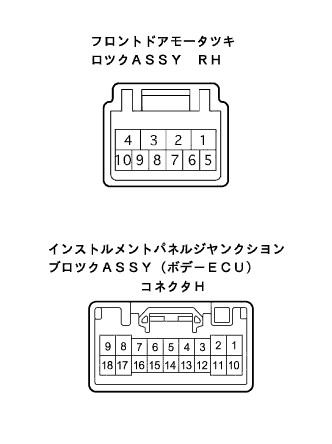

電気式ドアロツクシステム 運転席ドアのみロック、アンロックできない |
| 手順1 | フロントドア ロックASSY RH(モータ ツキ)単体点検 |
ドアロック作動およびポジションスイッチ導通点検
 |
ドアロツク内のモータ端子間にバツテリ電圧を加えたときのドアロック作動およびポジションスイッチの導通を点検する。
| 接続 | 作動 | 基準 ポジションスイッチ |
|---|---|---|
| バツテリプラス←→4端子 バツテリマイナス←→1端子 | LOCK | 7端子←→8端子 導通なし |
| バツテリプラス←→1端子 バツテリマイナス←→4端子 | UNLOCK | 7端子←→8端子 導通あり |
|
| ||||
| OK | |
| 手順2 | ワイヤハーネス点検 |
フロントドアモータツキロツクASSY RHのコネクタおよびボデーECUのコネクタHを切り離す。
|  |
SST(トヨタエレクトリカルテスター)を使用して、車両側コネクタ各端子間の導通を点検する。
| 端子番号 (ドアロック←→ボデーECU) | 基準 |
|---|---|
| 1(UL)←→H18(ACT-) | 導通あり |
| 4(L)←→H3(ACT+) | 導通あり |
|
| ||||
| OK | ||
| ||